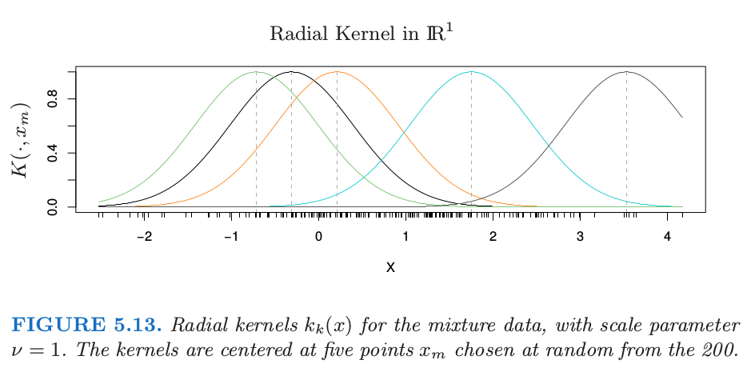
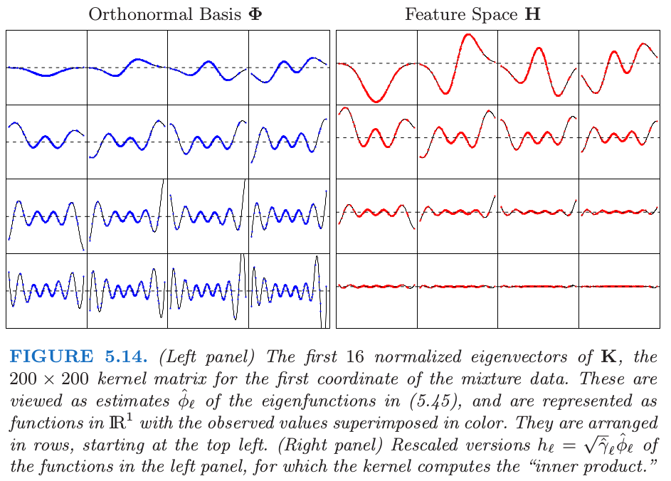
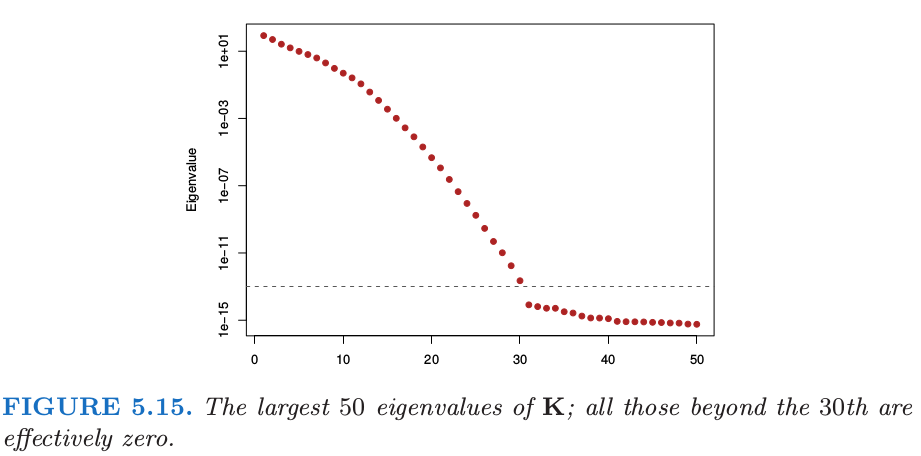

5.8 正则化和再生核希尔伯特空间理论¶
这一节我们将样条放进更大的正规方法框架下以及 再生核希尔伯特空间 (reproducing kernel Hilbert spaces) 中．这部分非常专业 (quite technical)，因此不感兴趣或者有些畏惧的读者可以跳过．
一般的正则化问题形式如下
其中 \(L(y,f(x))\) 是损失函数，\(J(f)\) 是惩罚函数，\(\cal H\) 是 \(J(f)\) 有定义的函数空间．Girosi et al. (1995)1 描述了形如下式的非常一般的惩罚函数
其中 \(\tilde f\) 记为 \(f\) 的 Fourier 变换，并且 \(\tilde G\) 是当 \(\Vert s\Vert\rightarrow \infty\) 趋于 \(0\) 的正函数．上式想法是 \(1/\tilde G\) 加大对 \(f\) 的高频组分的惩罚．在一些额外的假设下，他们证明解有如下形式
其中 \(\phi_k\) 张成惩罚函数 \(J\) 的零空间，并且 \(G\) 是 \(\tilde G\) 的逆 Fourier 变换．光滑样条和 thin-plate 样条都属于这个框架．这个解的显著特点是当准则 \eqref{5.42} 定义在无限维空间，解是有限维．在下一节我们考虑一些具体的例子．
核产生的函数空间¶
形如 \eqref{5.42} 的问题的一个重要子类是由正定核 \(K(x,y)\) 产生的，对应的函数空间 \({\cal H}_K\) 被称为 再生核希尔伯特空间 (reproducing kernel Hilbert space)，简称为 RKHS．惩罚函数也是用核来定义的．我们对这个模型类进行一个简短的介绍，这取自 Wahba (1990)2 和 Girosi et al. (1995)1，并且在 Evgeniou et al. (2000)3 中有很好的总结．
令 \(x,y\in \IR^p\)．我们考虑由 \(\\{K(\cdot, y), y\in \IR^p\\}\) 线性张成的函数空间；也就是，形如 \(f(x)=\sum_m\alpha_mK(x, y_m)\) 的任意线性组合，其中每个核可以看成第一个变量的函数，并且由第二个变量索引．假设 \(K\) 有 特征展开 (eigen-expansion)
其中 \(\gamma_i\ge 0,\sum_{i=1}^\infty \gamma_i^2 < \infty\)．
!!! note “weiya 注：Mercer’s theorem”
\eqref{5.45} 的分解由 Mercer’s theorem 保证，Mercer’s theorem 将半正定矩阵的特征分解推广到半正定核函数的特征分解，具体地，
 图片来源: Wiki: Mercer’s theorem．
图片来源: Wiki: Mercer’s theorem．
\({\cal H}_K\) 的元素是关于这些 特征函数 (eigen-functions) 的展开，即
并且约束条件为
其中 \(\Vert f\Vert_{{\cal H}\_K}\) 由 \(K\) 导出的范数．
!!! note “weiya 注：Induced Norm” 希尔伯特空间是完备内积空间，对于一般的希尔伯特空间 \(\cal H\)，其 导出范数 (induced norm) 为 $\( \Vert f\Vert_{{\cal H}} := \sqrt{\langle f,f\rangle_{{\cal H}}}\,. \)$
!!! note “weiya 注：两种构造 RKHS 的方法” 一般地，有两种构造 RKHS 的方法：
第一种，给定一个半正定核 $K$，定义映射 $\Phi:\calX\mapsto \IR^\calX$ 为 $\Phi(x) = K(\cdot, x)$，然后考虑向量空间
$$
\span(\{\Phi(x):x\in\calX\}) = \left\{f(\cdot) = \sum_{i=1}^N\alpha_iK(\cdot, x_i)\right\}\,,
$$
并对 $f = \sum_{i=1}^N\alpha_iK(\cdot, u_i), g = \sum_{i=1}^N\beta_iK(\cdot, v_i)$ 定义内积
$$
\langle f, g\rangle = \sum_{i=1}^N\sum_{j=1}^N\alpha_i\beta_jK(u_i,v_j)\,,
$$
则 $K$ 满足核再生性质，并且 $\overline{\span(\{\Phi(x)\})}$ 定义了 RKHS.
另外一种，则是用 Mercer 定理，定义内积
$$
\langle f, g\rangle_{\calH} = \sum_{j=1}^{\infty}\frac{\langle f,\phi_j\rangle\langle g,\phi_j\rangle}{\mu_j}
$$
则
$$
\left\{f=\sum_{j=1}^\infty c_j\phi_j\mid \sum_{j=1}^\infty c_j^2/\mu_j < \infty\right\}
$$
为 RKHS.
参考 [Wainwright (2019)](https://doi.org/10.1017/9781108627771) 和 [Peter Bartlett's notes](https://people.eecs.berkeley.edu/~bartlett/courses/281b-sp08/7.pdf).
\eqref{5.42} 中空间 \({\cal H}\_K\) 的惩罚函数定义为二次范数 \(J(f)=\Vert f\Vert_{{\cal H}\_K}^2\)．\(J(f)\) 的值可以解释为广义岭惩罚，其中在展开式 \eqref{5.45} 中，大的特征值惩罚较小，反之亦然．
重写 \eqref{5.42}，我们有
或者等价地，
可以证明（Wahba, 19902, 另见 练习 5.15），\eqref{5.48} 的解是有限的，并且如下形式
!!! info “weiya 注：Ex. 5.15” 已解决，详见 Issue 163: Ex. 5.15, 其中证明了再生核性质。
基函数 \(h_i(x)=K(x,x_i)\)（关于第一个变量的函数）被称作 \({\cal H}\_K\) 中 \(x_i\) 处的 representer of evaluation，因为对于 \(f\in {\cal H}\_K\)，容易看到 \(\langle K(\cdot, x_i),f\rangle_{{\cal H}\_K} = f(x_i)\)．类似地，\(\langle K(\cdot, x_i), K(\cdot,x_j)\rangle_{{\cal H}\_K}=K(x_i, x_j)\)（\({\cal H}\_K\) 的再生性质），
!!! note “weiya 注: 核再生性质 (kernel reproducing property)” 对于任意的 \(x\in {\cal X}\), \(K(\cdot, x) \in \cal H\)，并且满足 $\( \langle f, K(\cdot, x)\rangle_{\cal H} = f(x)\qquad \text{for all }f\in \cal H\,. \)\( 这称为 **核再生性质 (kernel reproducing property)**．另外，对于任意半正定核 \)K\(，存在唯一的希尔伯特空间 \)\cal H\( 满足核再生性质，此时 \)\cal H$ 也被称之为 再生核希尔伯特空间 (RKHS).
也因此对于 \(f(x)=\sum_{i=1}^N\alpha_iK(x,x_i)\)
根据 \eqref{5.50} 和 \eqref{5.51}，\eqref{5.48} 退化为有限维准则
我们正在使用向量记号，其中 \(\K\) 是第 \(ij\) 个元素为 \(K(x_i,x_j)\) 的 \(N\times N\) 的矩阵．简单的数值算法可以用来优化 \eqref{5.52}．无限维问题 \eqref{5.48} 或 \eqref{5.49} 退化为有限维优化问题的现象在支持向量机（见第 12 章）中被称为 核性质 (kernel property)．
这类模型有一个贝叶斯解释，其中 \(f\) 被解释为零均值平稳高斯过程的实现，其中先验协方差函数为 \(K\)．特征值分解得到一系列方差为 \(\gamma_j\) 的正交特征函数 \(\phi_j(x)\)．一般的情形是，“光滑”函数 \(\phi_j\) 有更大的先验方差，而“粗糙”的 \(\phi_j\) 有较小的先验方差．\eqref{5.48} 中的惩罚是先验对联合概率的贡献度，并且方差越小惩罚越大（与 \eqref{5.43} 相比）．
为了简便，我们这里处理所有 \(\cal H\) 中的成员都被惩罚的情形，如 \eqref{5.48}．更一般地，\(\cal H\) 中可能有些组分我们希望单独留下来，比如 5.4 节 中的三次光滑样条的线性函数．5.7 节 的多维 thin-plate 样条以及张量积样条也都属于这类．在这些情形下，有个更方便的表示 \(\cal H=\cal H_0\oplus\cal H_1\)，举个例子，其中零空间 \(\cal H_0\) 由没有被惩罚的 \(x\) 的低阶多项式组成．惩罚项变为 \(J(f)=\Vert P_1f\Vert\)，其中 \(P_1\) 是 \(f\) 在 \(\cal H_1\) 上的正交投影．这个解形式为 \(f(x)=\sum_{j=1}^M\beta_jh_j(x)+\sum_{i=1}^N\alpha_iK(x,x_i)\)，其中第一项表示 \(\cal H_0\) 中的展开．从贝叶斯的观点看，\(\cal H_0\) 中组分的系数的先验的方差无穷大．
RKHS 的例子¶
上述的机理是由核 \(K\) 和损失函数 \(L\) 的选择 驱动 (driven) 的 ．我们首先考虑采用平方误差损失的回归．将 \eqref{5.48} 中的惩罚特定为最小二乘，则解可以用对应 \eqref{5.49} 或 \eqref{5.52} 的两个等价方式进行描述：
对于无穷维的广义岭回归问题 $\( \underset{\{c_j\}_1^\infty}{\min}\sum\limits_{i=1}^N\Big(y_i-\sum\limits_{j=1}^\infty c_j\phi_j(x_i)\Big)^2+\lambda\sum\limits_{j=1}^\infty \frac{c_j^2}{\gamma_j}\tag{5.53}\label{5.53} \)\( 或者写成 \)\( \underset{\alpha}{\min}(\y-\K\alpha)^T(\y-\K\alpha)+\lambda \aalpha^T\K\aalpha\tag{5.54}\label{5.54} \)$
易得 \(\alpha\) 的解
且
\(N\) 个拟合值的向量为
估计值 \eqref{5.57} 也是稀疏统计 (Cressie, 1993)4 中高斯随机域的 kriging 估计．另外 \eqref{5.58} 可以与光滑样条拟合 \eqref{5.17} 进行比较．
!!! note “weiya 注：Recall” $\( \mathbf S_\lambda=(\mathbf I+\lambda \mathbf K)^{-1}\tag{5.17}\label{5.17} \)$
带惩罚的多项式回归¶
核 \(K(x,y)=(\langle x, y\rangle+1)^d\) (Vapnik, 1996)5，对于 \(x,y\in \IR^p\)，有 \(M=\binom{p+d}{d}\) 个特征函数，它张成了 \(\IR^p\) 中总阶数为 \(d\) 的多项式空间．举个例子，当 \(p=2, d=2,M=6\)，有
其中
可以用 \(M\) 个 \(K\) 的特征函数和特征值来表示 \(h\)
其中 \(\D_\gamma=\diag(\gamma_1,\gamma_2,\ldots, \gamma_M)\)，并且 \(\V\) 是 \(M\times M\) 的，且为正交．
!!! info “weiya 注：” 练习 5.16(a) 要求推导 \eqref{5.62}，该小问已解决，详见 Issue 164: Ex. 5.16．
假设我们希望求解带惩罚的多项式回归问题
将 \eqref{5.62} 代入 \eqref{5.63}，我们得到 \eqref{5.53} 的展开来进行优化（练习 5.16）．
!!! info “weiya 注：Ex. 5.16” 已解决，详见 Issue 164: Ex. 5.16．
基函数的个数 \(M=\binom{p+d}{d}\) 可以非常大，通常大于 \(N\)．等式 \eqref{5.55} 告诉我们如果采用解函数的核表示，我们仅仅需要对核进行 \(N^2\) 次赋值，而且可以以 \(O(N^3)\) 的计算量得到解．
This simplicity is not without implications. \eqref{5.61} 中的每个多项式 \(h_m\) 从 \(K\) 的特定形式继承了缩放因子，这对 \eqref{5.63} 的惩罚有影响．我们将在下一节详细讨论．
高斯径向基函数¶
在前面的例子中，选择核是因为能表示成多项式的展开，这样可以方便地计算高维内积．在这个例子中，选择核是因为 \eqref{5.50} 中的函数形式．
举个例子，在平方误差损失下，高斯核 \(K(x,y)=e^{-\nu \Vert x-y\Vert^2}\) 能得到展开式为高斯径向基函数的回归模型，
每个点都在训练特征向量 \(x_m\) 处中心化了．可以采用 \eqref{5.54} 来估计参数．

图 5.13 采用第二章混合例子中的第一个坐标展示了 \(\IR^1\) 中的径向核．我们展示了 \(200\) 个核基函数 \(k_m(x)=K(x,x_m)\) 中的五个．

图 5.14 展示了 \(x\in \IR^1\) 的径向核的隐式特征空间．我们计算 \(200\times 200\) 的核矩阵 \(\K\)，以及其特征分解 \(\Phi\D_\gamma\Phi^T\)．我们可以认为 \(\Phi\) 的列和 \(\D_\gamma\) 中对应的特征值是特征展开 \eqref{5.45} 中的经验估计．
!!! note “原书脚注：” \(\Phi\) 的第 \(\ell\) 列是 \(\phi_\ell\) 的一个估计，这是对 \(N\) 个观测中的每一个进行赋值．另外，\(\Phi\) 的第 \(i\) 行是基函数 \(\phi(x_i)\)（在 \(x_i\) 处取值）的估计向量．尽管原则上，\(\phi\) 可以有无穷多的元素，但我们的估计至多有 \(N\) 个元素．
尽管特征向量是离散的，但我们还是可以将它们表示成 \(\IR^1\) 中的函数（练习 5.17）．

!!! info “weiya 注：Ex. 5.17” 已解决，详见 Issue 165: Ex. 5.17．
图 5.15 展示了 \(\K\) 的最大的 \(50\) 个特征值．最大特征值对应的特征函数是光滑的，并且它们随着 order 增加变得更加弯曲．这使得 \eqref{5.49} 中的惩罚变成了可能，其中我们看到高阶函数的系数比低阶函数惩罚更多．图 5.14 中的右面板显示了下面特征函数对应的特征空间的表示
注意到 \(\langle h(x_i), h(x_{i'})\rangle=K(x_i, x_{i'})\)．通过特征值来缩放快速将大部分的函数降为 \(0\)，在这种情形下留下大约 \(12\) 个有效维度．对应的优化问题是如 \eqref{5.63} 中标准的岭回归．所以尽管原则上隐式的特征空间是无穷维的，但有效维度还是非常小的，因为对每个基函数应用相对大小的收缩．核缩放参数 \(\nu\) 在这里也起一定作用；更大的 \(\nu\) 意味着更多局部的 \(k_m\) 函数，并且也增加了特征空间的有效维度．更多细节参见 Hastie and Zhu (2006)6．
我们知道被称为 thin-plate 样条 (5.7 节)是关于径向基函数的展开 (Girosi et al., 1995)1，它由下列核产生
径向基函数将在 6.7 节详细讨论．
支持向量机¶
第 12 章中用于两个类别分类的支持向量机有形式 \(f(x)=\alpha_0+\sum_{i=1}^N\alpha_iK(x,x_i)\)，选择参数使下式最小化
其中 \(y_i\in \\{-1, 1\\}\)，并且 \([z]_+\) 记做 \(z\) 的正值部分．这可以看成是带线性约束的二次优化问题，并要求该解的二次规划算法．支持向量 (support vector) 的名字来自这样一个事实： 一般有许多的\(\hat\alpha_i=0\)【因为 \eqref{5.67} 中损失函数的 piecewise-zero 特性】，也因此 \(\hat f\) 是 \(K(\cdot, x_i)\) 的子集的展开．更多细节见 12.3.3节．
- 1(1,2,3)
Girosi, F., Jones, M. and Poggio, T. (1995). Regularization theory and neural network architectures, Neural Computation 7: 219–269.
- 2(1,2)
Wahba, G. (1990). Spline Models for Observational Data, SIAM, Philadelphia.
- 3
Evgeniou, T., Pontil, M. and Poggio, T. (2000). Regularization networks and support vector machines, Advances in Computational Mathematics 13(1): 1–50.
- 4
Cressie, N. (1993). Statistics for Spatial Data (Revised Edition), Wiley-Interscience, New York.
- 5
Vapnik, V. (1996). The Nature of Statistical Learning Theory, Springer, New York.
- 6
Hastie, T. and Zhu, J. (2006). Discussion of “Support vector machines with applications” by Javier Moguerza and Alberto Munoz, Statistical Science 21(3): 352–357.